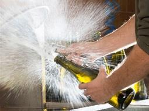
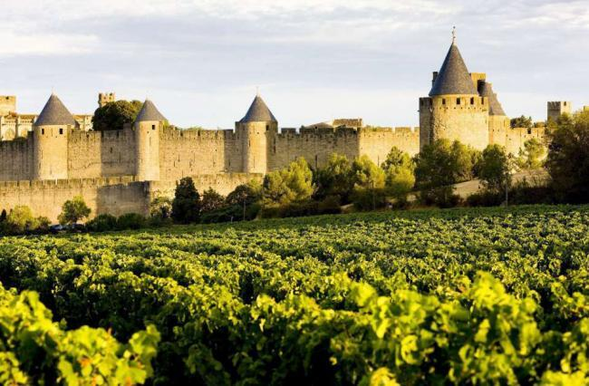
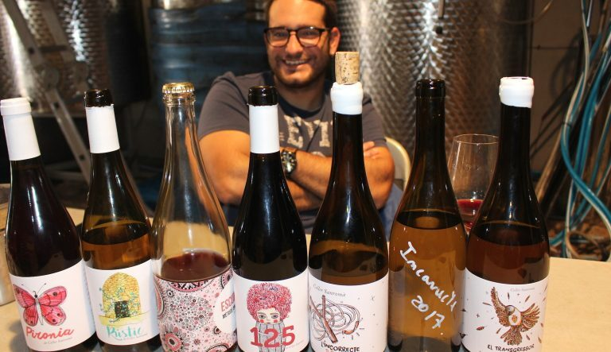
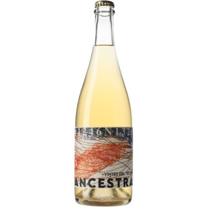
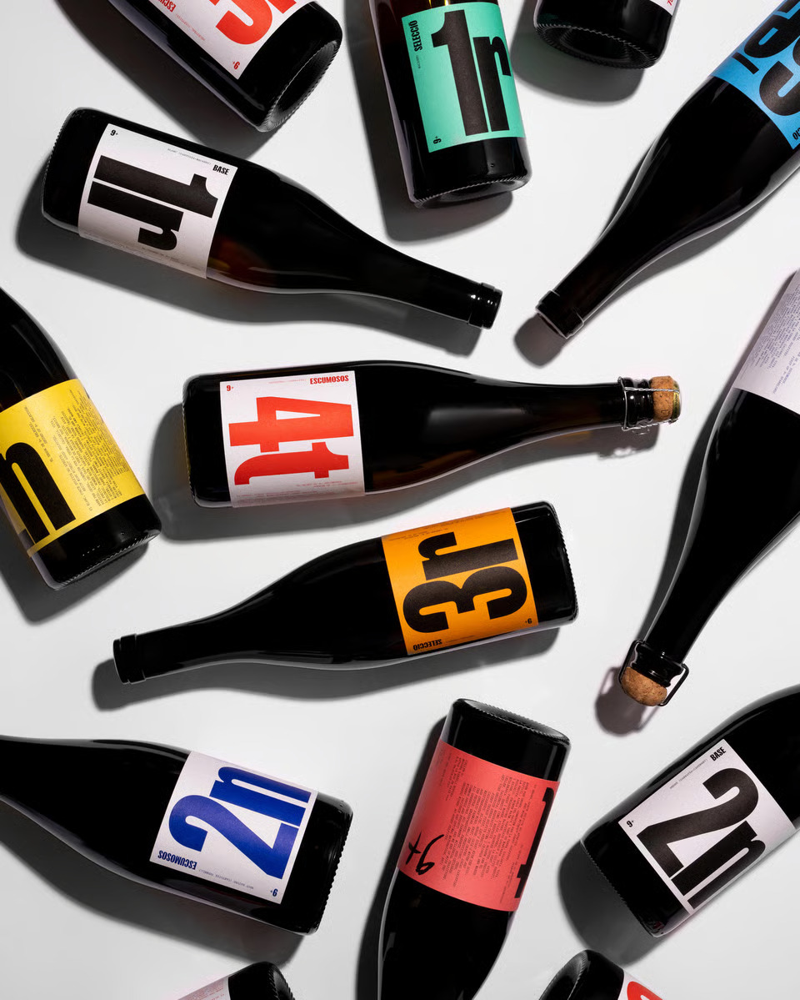

Una burbuja diferente
Estás en la mesa. Delante tuyo, una botella con tapón de corona, el vino ligeramente turbio, servido en copa amplia. Te llevas el vaso a los labios y lo que encuentras no es el gas agresivo de un cava industrial ni la aristocracia del champagne. Es otra cosa. Una burbuja que habla, que tiene textura, que sabe a uva y a tierra y a memoria.
Esto es un vino de método ancestral. Un pét-nat —petillant naturel. Y si os parece una moda nueva, hay que explicaros algo: este vino es, probablemente, el vino espumoso más antiguo que existe. La demarcación de Tarragona —con el Priorat, el Montsant, la Conca de Barberà, la Terra Alta, el Baix Gaià— es uno de los territorios mejor dotados de Cataluña para producirlo. Lo tenemos en casa. Y a menudo no lo sabemos.
 El sedimento no es un defecto: es la firma del método ancestral.
El sedimento no es un defecto: es la firma del método ancestral.
Cómo funciona
El método es sencillo hasta la brutalidad. Se vendimia el racimo, generalmente de forma manual y en el punto óptimo de madurez. Se inicia la fermentación alcohólica con las levaduras naturales que habitan en la propia piel de la uva y en el aire del celler —no levaduras de laboratorio, sino las que llevan siglos en esa tierra. Y entonces, cuando esa fermentación todavía no ha acabado —cuando el vino todavía tiene azúcar residual activo y las levaduras siguen trabajando— se embotella. El tapón se pone. El vino continúa fermentando dentro. El gas carbónico que produce esa fermentación no puede escapar. Queda integrado en el líquido. Nace la burbuja.
Sin adición de azúcar. Sin levaduras industriales. Sin dosage. Sin segunda fermentación artificial. Lo que hay en la copa es exactamente lo que había en la viña, transformado por la naturaleza con una intervención humana mínima.
La diferencia fundamental con el cava o el champagne es esencial: en esos casos la primera fermentación se termina completamente en depósito, el vino queda quieto, y después se añade una mezcla de azúcar y levaduras para provocar una segunda fermentación controlada dentro de la botella —la que crea las burbujas. En el pét-nat no hay primera y segunda fermentación. Hay una sola, continua, que empieza en el depósito y acaba en la botella. Eso tiene consecuencias enormes en la copa: la burbuja tiende a ser más fina, más integrada, menos agresiva. La sensación en el paladar es cremosa, casi textil. La graduación alcohólica es naturalmente baja, entre 9 y 11 grados. El resultado es un vino fresco, vivo, honesto. Un vino que no intenta ser lo que no es.
Muchos elaboradores optan por un degüelle —o dégorgement— para eliminar el sedimento que queda en la botella tras la fermentación. En el método ancestral el proceso es artesanal: se posiciona la botella boca abajo para que los posos se concentren en el cuello, y se abre con un golpe preciso para que la presión interior los expulse. Sin el frío industrial del champagne, sin líneas de producción automatizadas. La mano del elaborador, la presión del vino y el momento justo. Algunos optan por no degollar —y dejan el sedimento integrado en la botella, que se sirve con suavidad. Ambas decisiones son válidas. Ambas son honestas.

El degüelle artesanal: la presión del vino hace el trabajo. Sin frío industrial, sin automatización.¿Por qué vuelven ahora?
No es casualidad. Tres fuerzas confluyen al mismo tiempo: el cansancio de una generación que prefiere la verdad a la perfección; el precio y la escala —el método ancestral se puede hacer en cellers pequeños sin vender cien mil botellas—; y la identidad, porque el pét-nat es el espumoso del lugar. Cada uva, cada suelo, cada microclima se expresan sin filtro.
¿Pasará de moda? El ruido que lo rodea, probablemente sí. Pero el vino en sí —ligero, fresco, honesto, accesible— responde a una tendencia de fondo: el deseo de beber menos pero mejor, de saber qué hay en la copa, de conectar el vino con el lugar donde nace. Eso no pasa de moda. Evoluciona.

Limoux, Occitania — donde en 1531 los monjes embotellaron la primera burbuja ancestral de la historia.En casa nuestra, desde siempre
La demarcación de Tarragona tiene dos mil años de viticultura documentada. En la Cartuja de Scala Dei, en el Priorat, los monjes cartujos elaboraban vino desde 1194 con fermentaciones naturales y mínima intervención. No lo hacían por ideología. Lo hacían porque era la única manera que sabían. Y funcionaba. La filoxera del siglo XIX rompió aquella continuidad, pero las variedades quedaron: la garnatxa blanca de la Terra Alta, el trepat de la Conca, el cartoixà del Baix Gaià, el morenillo casi extinguido recuperado, el sumoll resucitado, el cartoixà vermell del Alt Camp. Tenemos la uva ideal. Tenemos el territorio. Y tenemos los elaboradores.
Algunos de los que lo hacen aquí
Una selección —no exhaustiva— de cellers de la demarcación que trabajan el método ancestral con proceso documentado y vino en el mercado.
 El método ancestral genera una diversidad irrepetible: cada botella es el resultado de una sola fermentación, sin correcciones ni añadidos.
El método ancestral genera una diversidad irrepetible: cada botella es el resultado de una sola fermentación, sin correcciones ni añadidos.
Celler Gritelles
DO Montsant · Cornudella
Brisat Ancestral · Macabeu24 días de fermentación, embotellado a densidad 997, tres meses adicionales en botella, degüelle manual. Zero sulfitos, zero azúcares. «Brisat» combina el método ancestral con maceración en pieles — dos técnicas en una botella, de las que hablaremos en próximo artículo.
Bell Cros
DO Montsant · Marçà
Petillant Natural · Garnatxa Blanca100% garnatxa blanca, ceps de 40–70 años, ecológico certificado UE. Embotellada antes de acabar la fermentación. Aromática, acidez viva, graduación moderada.
Coop. Agrícola de Barberà
DO Conca de Barberà · Celler Martinell 1919
Cabanal Brut Natural · TrepatEl primer celler de Cataluña en elaborar un ancestral con trepat. Una cooperativa centenaria pionera con una variedad casi exclusiva de la Conca: piel fina, fruta roja intensa, acidez alta, graduación naturalmente baja.
Celler Sanromà
Alt Camp · Sin DO · Vila-rodona
Ancestral Rosat · Trepat ecològicEduard Sanromà elabora su Ancestral Rosat con 100% trepat ecológico. 10,5 grados, cinco meses de crianza en botella. Sin DO por las limitaciones regulatorias del método en España.
Mas Vicenç
DO Tarragona · Cabra del Camp
Ancestral Colldecabra Rosat100% garnatxa negra de finca propia, vendimiada en punto de madurez precoz para preservar la frescura. Aromas de cereza y frambuesa, burbuja fina.
Celler Jordi Miró
Terra Alta
Textura 3 Naturalment AncestralGarnatxa blanca de la Terra Alta, amarillo paja, burbuja cremosa, notas de fruta del bosque y flores. Fue Sonia, propietaria del Buidasacs, quien apostó por él para su carta — y el restaurante fue galardonado con el Gastronia 2025.
Bàrbara Forés · En Moviment
Terra Alta · Gandesa · 1.494 botellas
Moviment Ancestral · MorenilloPili Sanmartín Ferrer, sexta generación. Elaborado con morenillo, variedad casi extinguida recuperada por la familia en los años noventa. Una fermentación, seis meses en botella, degüelle manual. Notas de grosella, naranja y hierbas secas.
Vinyes del Tiet Pere
DO Tarragona · Alt Camp · Vilabella
Ancestral · Cartoixà Vermell · 350 bot.Oriol Pérez de Tudela y Mercè Salvat, con Sara Pérez y René Barbier Jr. (Venus la Universal / Mas Martinet) como socios. Viñas de 35 años en arcilla blanca calcárea. 11,5 grados.
Celler 9+
Tarragonès · La Nou de Gaià
Línea numerada de ancestralesMoisès Virgili, a cuatro kilómetros del mar. El 5è: 100% sumoll ecológico, blanco de negro, ancestral puro. El 7è: cartoixà ancestral —denominación local del xarel·lo en el Baix Gaià. El tesoro está al lado de casa.

Una noche en Llepol
Los Gourmets tuvimos la suerte de conocer a Eduard Sanromà de primera mano cuando presentó algunos de sus maridajes en una cena en Llepol: vino en mano, producto sobre la mesa, ninguna distancia entre quien hace y quien bebe.

Cena de verano
Los Gourmets probamos una primera versión del Colldecabra en una cena de verano, cuando el proyecto apenas iniciaba este camino. El mejor vino no siempre es el que acumula años de bodega, sino el que sabes exactamente de dónde viene.

Gastronia 2025 · Buidasacs
Fue Sonia, propietaria del Buidasacs, quien apostó por el Textura 3 de Celler Jordi Miró para su carta — una apuesta que tuvo su recompensa cuando el restaurante fue galardonado con el Gastronia 2025. Los Gourmets lo descubrimos en aquella visita memorable, donde Andrea Miró representa un celler que elabora uno de los ancestrales más elegantes de la Terra Alta.

Vinyes del Tiet Pere
Cuando gente del nivel de Sara Pérez y René Barbier Jr. apuesta por 350 botellas de cartoixà vermell de un pueblo del Alt Camp, vale la pena buscarla. Un ancestral de variedad casi desconocida que desaparece antes de que muchos sepan que existe.

Celler 9+
La sorpresa de la lista. Moisès Virgili elabora en la Nou de Gaià una línea numerada completa de ancestrales —sumoll, cartoixà— a cuatro kilómetros del mar. El cartoixà es la denominación local del xarel·lo en el Baix Gaià: una variedad que Virgili vindica con la insistencia de quien sabe por dónde va. El tesoro está, literalmente, al lado de casa.
Cómo disfrutarlos
Temperatura entre 6 y 9 grados. Copa amplia, no flauta — en un pét-nat los aromas lo son todo. Si la botella tiene sedimento, servidla con suavidad. Marida a la perfección con pescado a la plancha, almejas, anchoas, mejillones o arroz de marisco. Para iniciarse: un pét-nat de garnatxa blanca o trepat, a 7 grados, con unas anchoas de l'Escala o unos mejillones a la vinagreta. Si después de esa experiencia no habéis entendido de qué vino hablábamos, volved a leer desde el principio.
La mirada gourmet
Desde los Gourmets de Tarragona entendemos que el vino y la cocina son los dos idiomas de un mismo diálogo sobre el territorio. Beber un pét-nat de morenillo de la Terra Alta es beber la Serra de Pàndols y la historia de una familia que salvó una variedad de la extinción. Beber un ancestral de trepat de la Conca es beber Barberà, la cooperativa de Martinell, la memoria de una variedad que casi no sobrevivió. Beber un cartoixà vermell de Vilabella es beber el Alt Camp, las arcillas blancas, las viñas de 35 años que nadie miraba. Beber un sumoll del Baix Gaià es beber el mar, la marinada, la apuesta de un enólogo que creyó en las viñas de su padre.
El vino ancestral no es el pasado que vuelve. Es el futuro que siempre había estado aquí.